Zhongyu CHEN
PhD Student
Vision Intelligence Lab, The Hong Kong Polytechnic University
I am a PhD student in the Vision Intelligence Lab at The Hong Kong Polytechnic University (PolyU)
, working with Dr. Danli Shi and Prof. Mingguang He.
I received my M.Sc. degree from Technical University of Munich (TUM) (Medical Engineering) and my B.Eng. degree from Harbin Institute of Technology (HIT).
During my master's studies, I was with the Chair for Computer Aided Medical Procedures & Augmented Reality (CAMP), supervised by
Prof. Zhongliang Jiang and Prof. Nassir Navab, focusing on ultrasound robotics and ultrasound imaging analysis. Prior to PolyU, I worked as a research assistant
in the Multi-scale Medical Robotics Centre (MRC) and Bioinspired Robotics and Medical Technology (BMT) group, Department of Mechanical and Automation Engineering,
The Chinese University of Hong Kong (CUHK), supervised by Dr. Xiangyu Chu and
Prof. Kwok Wai Samuel AU.
I find joy in wandering quiet trails, chasing the last light of day, capturing fleeting moments through my lens, and watching birds trace stories across the sky.
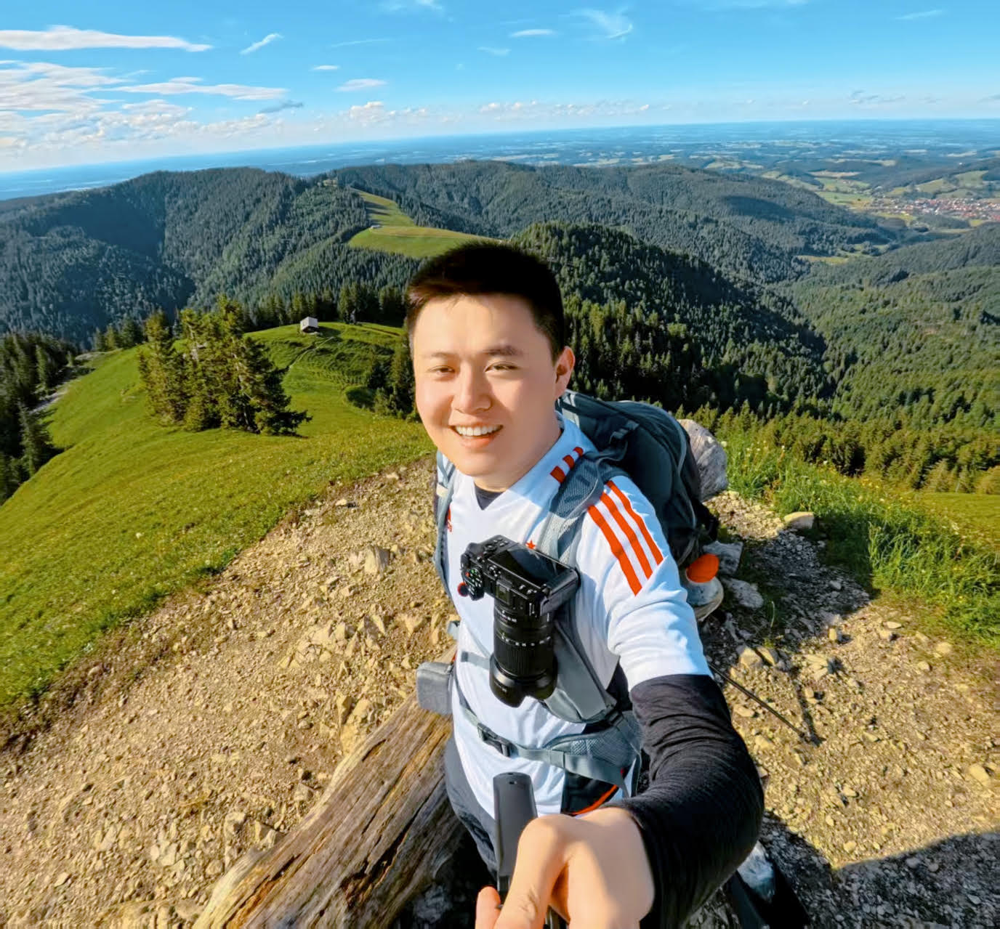
Academic & Professional Experiences
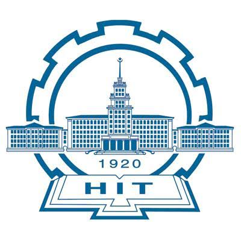

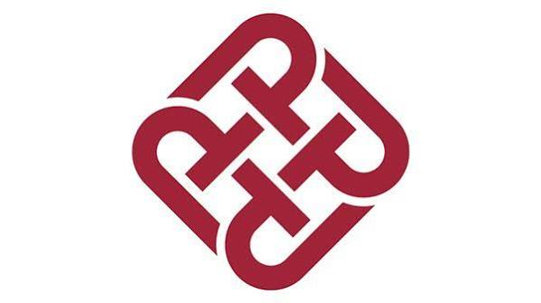
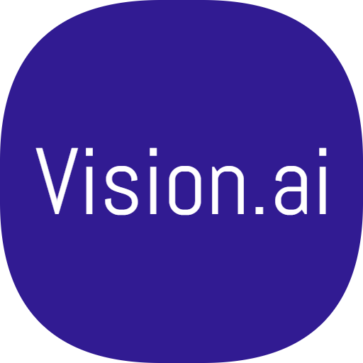
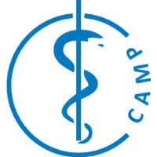
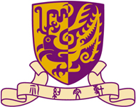

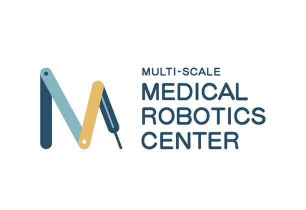
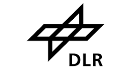
Selected Publications
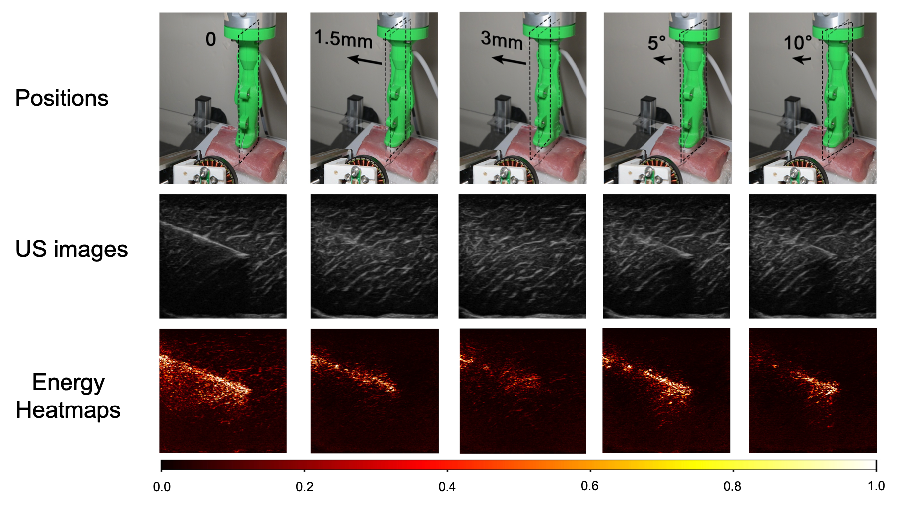
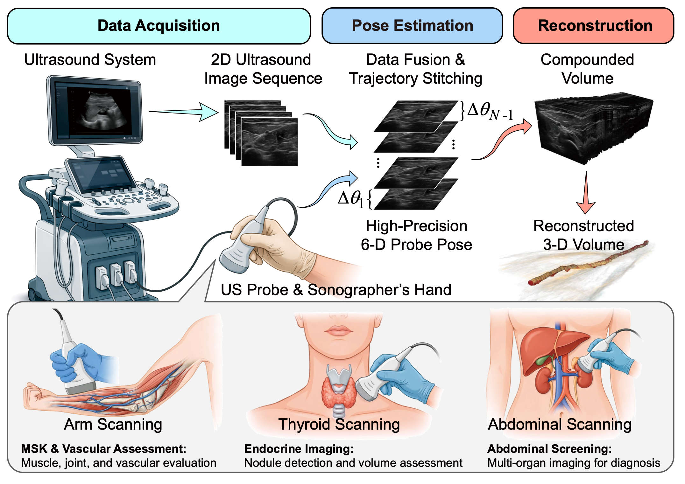
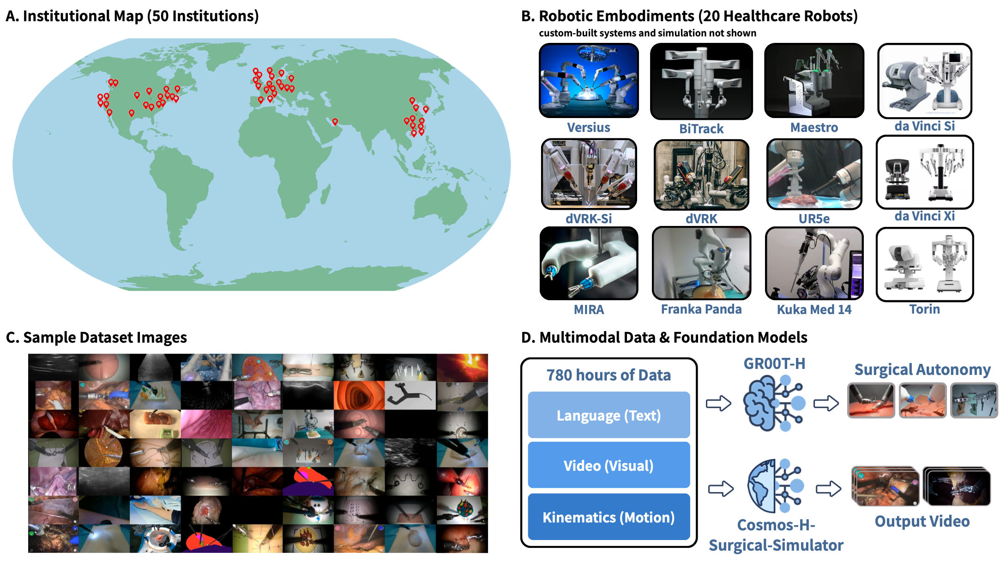
Beyond the lab
Blogs
A visual journal of places, conferences, and everyday moments.